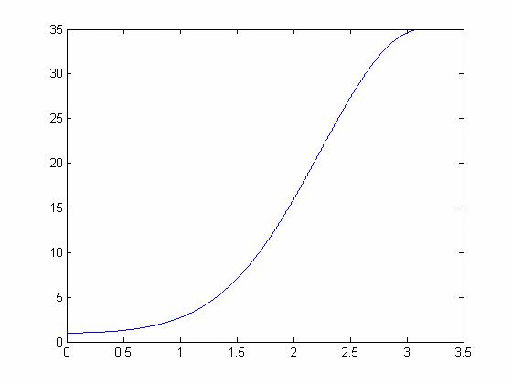

| DiscreteWavelets Toolbox |
trigonometric polynomial P(t)=sum_{k=0}^{K-1} nchoosek(K-1+j,j)sin^(2j)(w/2)
c = PolySin2j(K)
c = PolySin2j(K) takes an integer K and returns a vector c of length 2K+1. The elements of c are the Fourier coefficients of the trigonometric polynomial
The input K must be a positive integer.
The polynomial P(w) is used to compute biorthogonal spline filter pairs and the CDF97 biorthogonal filter pair.
Plot the Fourier series for P(w) where K=4.
c=PolySin2j(4) %Compute the coefficients of the trig polynomial w=0:.001:pi; %Sample points plot(w,abs(FiniteFourier(w,c,-4)));

The Fourier coefficients for P(w) are
c = -0.3125 2.5000 -8.1875 13.0000 -8.1875 2.5000 -0.3125
© 2007-2008 Patrick Van Fleet